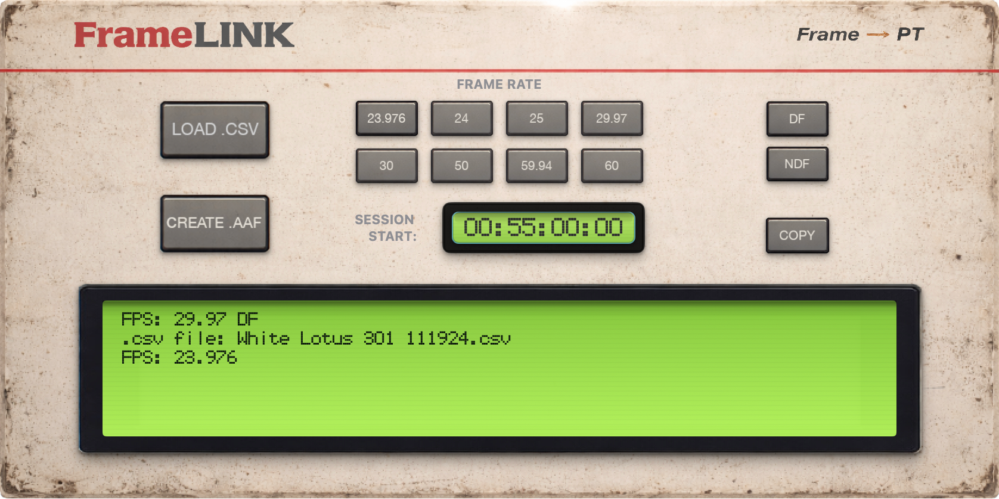

Mix faster
Convert Frame.io comments into timeline markers so you can knock out notes in order without losing flow.
Import FrameIO notes into the ProTools timeline.

Your mix was obviously flawless. Unfortunately, your client has some notes.
Take the pain out of the process by importing all Frame.io notes into the ProTools timeline in one shot.
Convert Frame.io comments into timeline markers so you can knock out notes in order without losing flow.
Notes live in marker comments to keep the marker lane uncluttered, while still one click away.
Multiple notes at the same timecode are folded into a single marker, with authors prepended.
In Frame.io, sort comments by timecode, then export as CSV.
Choose your session frame rate, set the session start timecode, and click Create .AAF.
Import the AAF and you’ll get markers at the correct timecodes, with notes stored in comments.
Hey Team — thanks for testing FrameLink.
If you run into anything weird, unexpected, or less than ideal, please send it my way at
mark@postproductiontools.com.
If an AAF export fails, please use the Copy button to copy the message from the LCD
status window and paste that directly into your email.
If the download doesn’t start, click here .